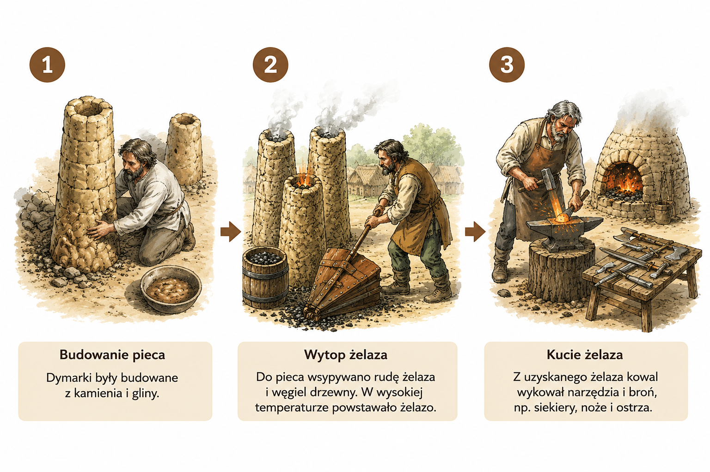

⚒ 13. Jak wytapiano żelazo?
⚜
Ludzie odkryli, jak zamieniać rudę żelaza w metal.
W specjalnych piecach, zwanych dymarkami, powstawało żelazo.
Dzięki temu mogli wykonywać mocniejsze narzędzia i broń.
1️⃣ Budowa dymarki
Dymarka była specjalnym piecem do wytapiania żelaza, budowano z gliny i kamieni.
2️⃣ Wytop żelaza
W wysokiej temperaturze ruda żelaza zamieniała się w metal.
3️⃣ Praca kowala
Kowale formowali gorące żelazo, tworząc narzędzia i broń.
⚒ Co dało żelazo?
- trwalsze narzędzia
- lepszą broń
- szybszą pracę

🦉 Sowa Historyk
Żelazo zmieniło życie ludzi.
➜ Dzięki niemu narzędzia były trwalsze, a praca łatwiejsza.